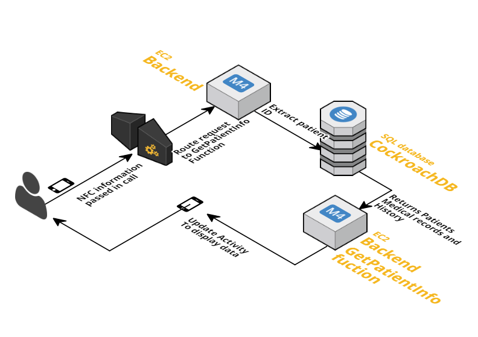
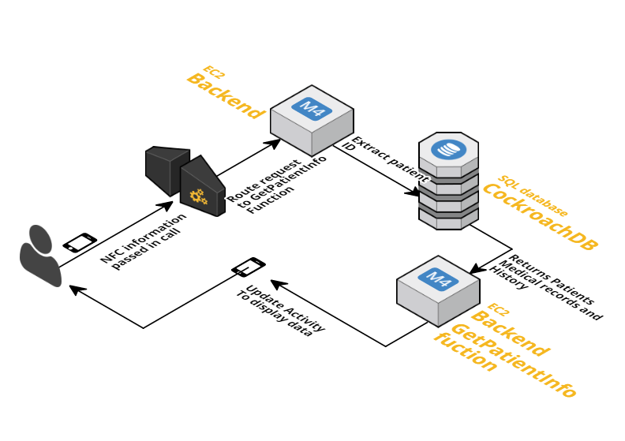
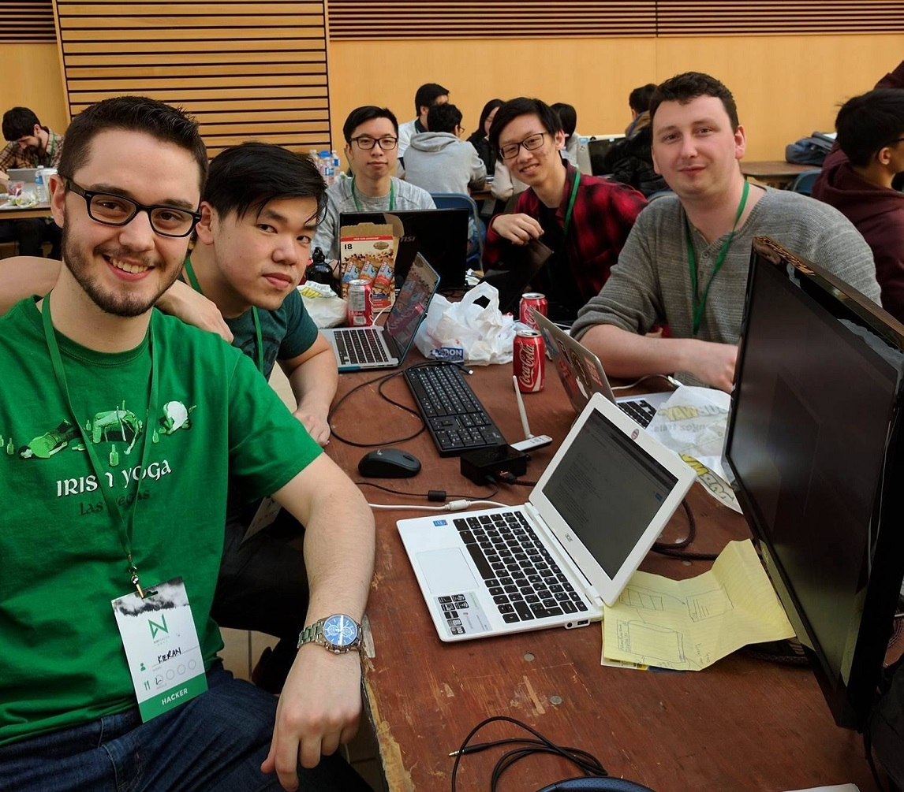

LifeBand is a wristband system designed to alleviate patient misidentification in hospitals and senior centers by managing patient medical record access.
The project was created during March 18-19, 2017 for nwHacks 2017, an annual hackathon hosted by StartupStorm from the University of British Columbia.

We placed among the top 5 projects.

The Inspiration and Problem
According to a study by the esteemed Johns Hopkins University, the third leading cause of death in the US is patient misidentification. Over a quarter of a million people die annually due to preventable medical errors - in other words, 700 deaths a day, or 1 death every two minutes. These medical errors can be miscommunications between people or departments, use of the wrong medication, errors in system design, failure to complete a planned action, or deviation from process.
We set out to envision a technological solution which better ties patients to their medical records, improves accessibility of information, and permits better restriction of information.
Solution
Our solution is an inexpensive system which could be scaled to the needs of an entire country's medical records and would allow for maximum availability even when under immense usage. Each patient has a medical bracelet which can be tapped with a phone to open the patient's medical records on an application.
Mockup
To better understand how a doctor would interact with the system, we designed a mockup showing the user flow and interaction. This showcases the user experience through the loading screen, bracelet scanning, and information display.
The System
Inexpensive and small identification tags which emit NFC are attached to hospital beds, or placed on wristbands and given to residents of senior centers. These are registered with the records of the person they are given to. Users interact with the tags by opening an Android application and scanning the tag with their NFC-enabled device.
This system is quick to respond and gathers information in real time. It is easy to use for those in the healthcare industry, and it is cheap to implement with minimal hardware components.
Technologies
The application will contact a Golang server which will query a CockroachDB relational database, both of which are hosted on Amazon Web Services. The patient data returned will be displayed on the device.
 

Near-Field Communication (NFC)
Each patient bracelet contains a light and cheap NFC tag. When the user taps the phone against the bracelet, the tag emits a small piece of data which identifies the patient uniquely, but does not include any confidential patient data itself.
Therefore, no sensitive data is exposed outside of the application and online database.
Android Application

The mobile application on Android is ideally designed to require authentication by doctors and nurses before accessing patient information, as well as authorization based on what level of care they are providing. Upon tapping an NFC bracelet, the app contacts the server with the patient ID and will receive the data to be displayed.
The data displayed can include personal information, history, emergency information, and medication.
Golang

The backend server, written in Golang, was designed to handle retrieval of patient data. Every request from the application contacts the server with a unique patient ID to request the information of that specific patient. Ideally, the server only provides the information pertinent to the level of care which the app is signed into. For example, surgeons will need more information than nurses.
CockroachDB
The database, a CockroackDB instance, provides patient data for the server to access. The instance is easily scalable, and is replicated with a triple-node architecture.
Amazon Web Services

Throughout the duration of the hackathon, the backend and database were hosted on an EC2 instance of Amazon Web Services.
Results
We placed among the top 5 projects in the hackathon and were invited to present in front of all participants as well as the final judges.
Lifeband, an NFC bracelet that creates a seamless patient direction! pic.twitter.com/0FwANq0pwF
— nwPlus (nwHacks + UBC LHD + cmd-f) (@nwplusubc) March 19, 2017
The judges consisted of:
- UBC President Santa Ono,
- Previous CEO of Pathful and current CEO of Proxxi (acquired by Mobify) Campbell Macdonald,
- Co-founder of Optigo Networks and board member of Coast Mental Health Byron Thom, and
- Product Lead of 1QBit David Byrd.
Our judges, @cambel, David Byrd, @ubcprez and @bmthom, are ready for the closing ceremonies! Are you? pic.twitter.com/8CDANrufe9
— nwPlus (nwHacks + UBC LHD + cmd-f) (@nwplusubc) March 19, 2017
Lightning Talk Presentation

A lightning talk was given by Jeffrey Leung on this project. Click the preview image above to view the video.
About
The creators of this project are Kieran McCormick, Jacky Chao, Carlson Chan, Jeffrey Leung, and Bradley Dalrymple.
Disclaimer: This page was created after the hackathon's completion.